TextBoss user manual
TextBoss is your team's shared inbox for texting clients from your organization's phone numbers. Everyone on the team sees the same conversations, so anyone can pick up where a colleague left off.
The examples use a made-up company, The Business Factory, with made-up staff and clients. Every name and phone number is fictional.
Using TextBoss
For everyone on the team.
1Getting started
Open the TextBoss address your administrator gave you and sign in with your username and password.
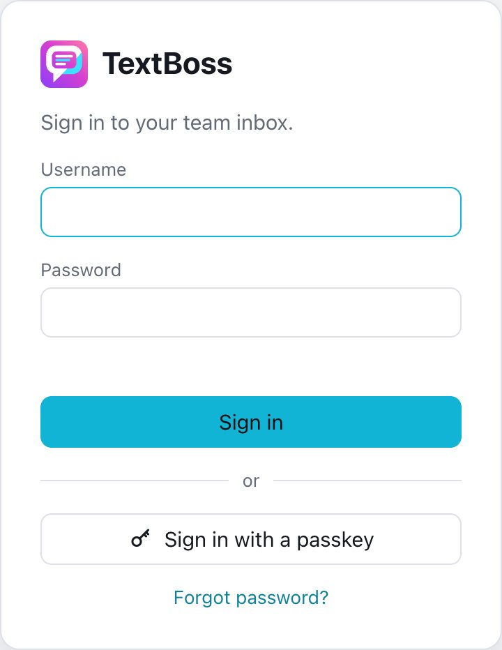
- Two-factor sign-in. If you've set up a passkey or authenticator app, you'll be asked for it after your password. Don't have it with you? Choose Email me a code instead. See Security.
- Forgot your password? Choose Forgot password?, enter your username or email, and type the 6-digit code from the email along with a new password.
- Welcome tour. The first time you sign in, a short tour points out the main parts of TextBoss and ends with a checklist of things to set up. Replay it any time from ⋮ → Take the tour.
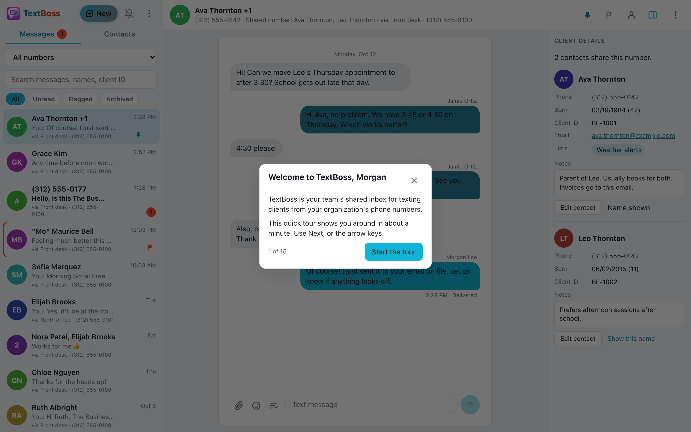
Until you add a passkey or authenticator app, a reminder appears at the top of the sidebar. Set up takes you to Security; Remind me tomorrow hides it for a day on all your devices.
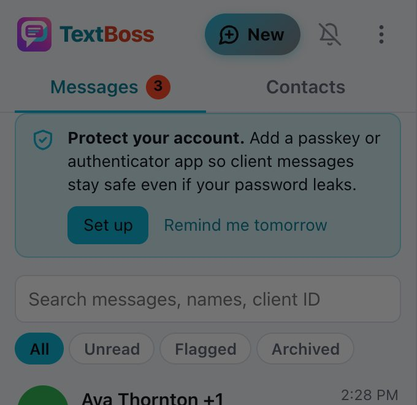
2Install it as an app
Installed, TextBoss opens in its own window with its own icon, no browser bar, and an unread count on the icon. On iPhone and iPad, installing is required for notifications.
| Device | How |
|---|---|
| iPhone, iPad | Open TextBoss in Safari, tap the Share button, then Add to Home Screen. Open it from the new icon and sign in. |
| Android | Open TextBoss in Chrome, tap ⋮, then Add to Home screen or Install app. |
| Mac | In Safari choose File → Add to Dock. In Chrome or Edge, click the install icon at the right of the address bar. |
| Windows | In Edge or Chrome, click the install icon at the right of the address bar (or ⋯ → Apps → Install this site as an app). |
Tip: the installed app has no reload button. If something looks out of date, use ⋮ → Refresh. When a new version of TextBoss is installed, a bar offers to reload.
3The inbox
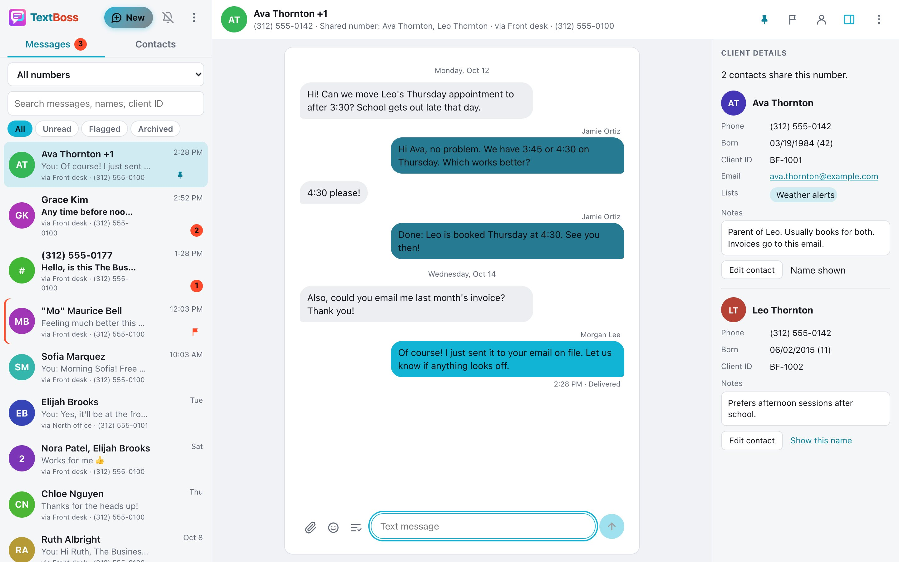
Every text to and from your organization's numbers lands in the conversation list, newest first.
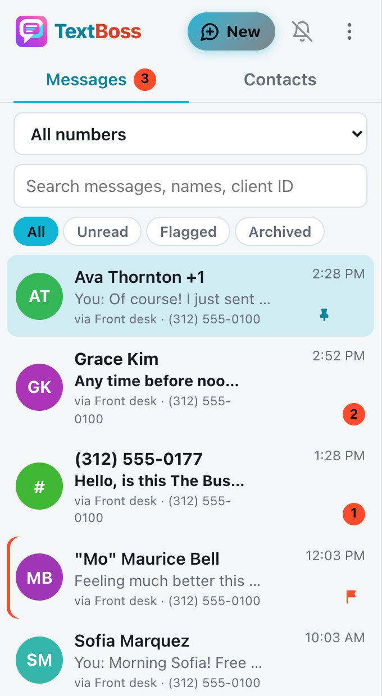
- Shared by the whole team
- A conversation belongs to the phone number, not to a person. Everyone who can use that number sees the same history and replies in the same thread.
- Unread
- Bold names and a red count. The Messages tab shows the total.
- Numbers
- With more than one number, choose one at the top or All numbers. Each row shows which number it's on ("via Front desk").
- Search
- Finds conversations by message text, a client's name, phone number or client ID.
- Filters
- Unread, Flagged and Archived. Archived conversations come back to the inbox by themselves when the client texts again.
- Pin and flag
- Hover a row to pin it to the top or flag it for follow-up. Pins and flags are shared with the team.
- Who's who
- Contacts show by name; numbers that aren't contacts show as a phone number. "+1" after a name means several contacts share that number; see Shared phone numbers.
4Conversations
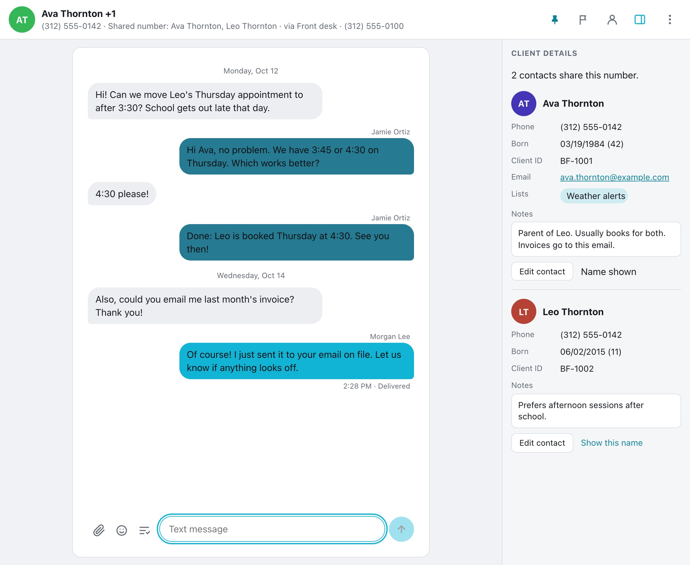
- Who said what. Clients are on the left and your team on the right. Every text from your team shows who sent it, and a teammate's messages are a different shade from yours.
- Delivery. Your latest message shows Sending…, Sent, Delivered or Failed with the reason. Some providers and carriers only report "Sent".
- Auto-replies and bulk texts are labeled, so you know a person didn't type them.
- Pictures and files show in the thread, each with a Download link.
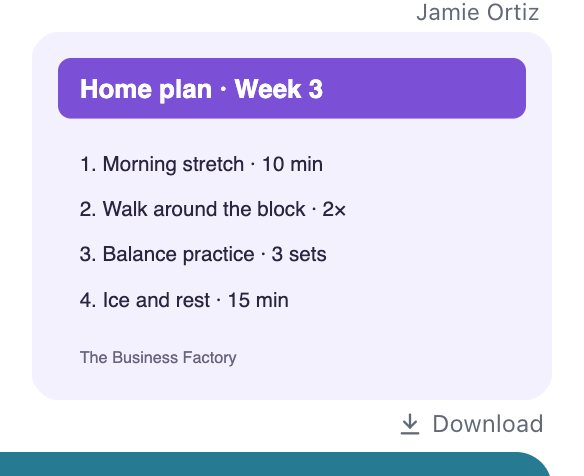
The conversation menu
The ⋮ button in the conversation header has everything else:
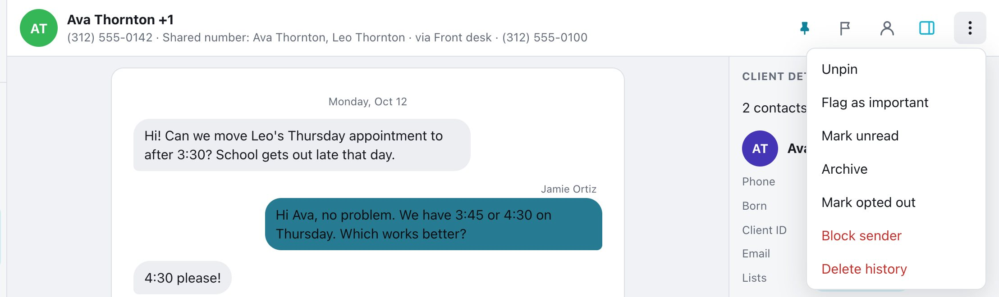
- Pin to top and Flag as important.
- Mark unread, to come back to it later.
- Archive to tidy the list. It returns when the client texts again.
- Mark opted out or Opt back in. See Opt-out.
- Block sender and Delete history are for admins only.
5Writing messages
Type in the message box at the bottom. On a computer, Enter sends and Shift+Enter starts a new line; on a phone, tap the send button. The buttons beside the box:
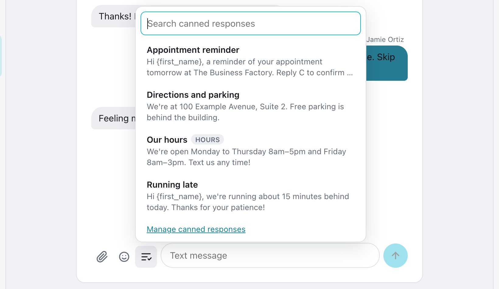
- 📎 Attach
- Pictures, PDFs and other files (sent as a picture message).
- ☺ Emoji
- A quick picker. Note that emoji make a text use 70 characters per part instead of 160.
- Canned responses
- Saved replies your team uses often. See Canned responses.
Opted-out clients. If the client replied STOP or was marked as opted out, TextBoss warns you before sending, and you must type SEND to confirm. Only do this when the law allows, for example a reply they asked for.
6New messages and group texts
Click New at the top of the sidebar (or press N on a computer). Search for contacts or type phone numbers, pick the number to send from, and write your message.
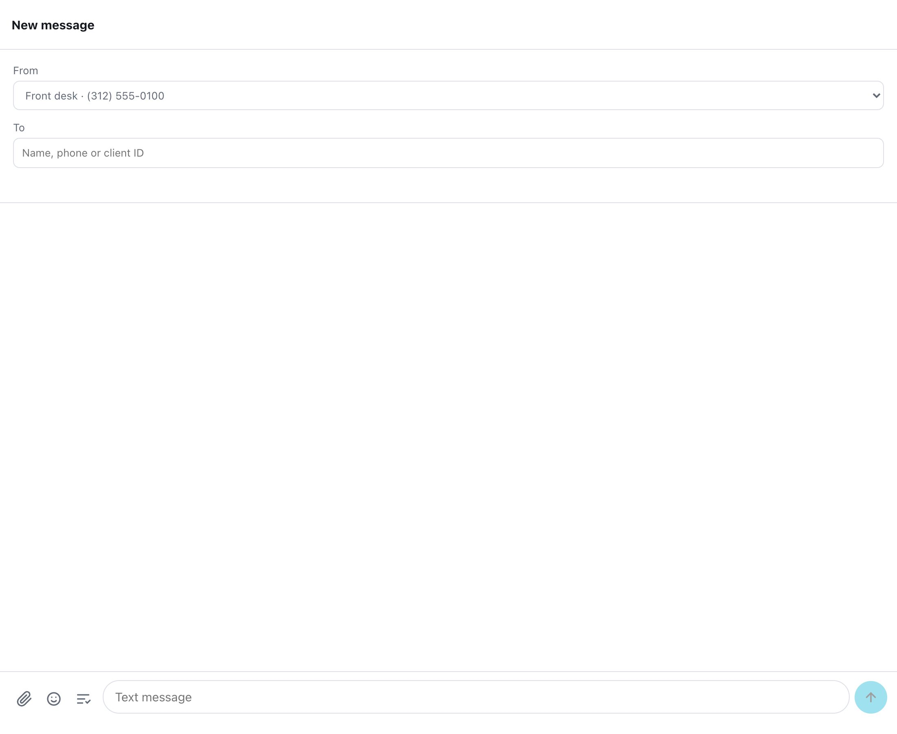
- Adding several people starts a group text (up to 10), where everyone sees each other's replies. To text several people individually, use a bulk message instead.
- If you text someone you already have a conversation with, TextBoss continues that conversation.
VoIP.ms: if your organization uses VoIP.ms for texting, group texts aren't available, because VoIP.ms can't send them. TextBoss will say so.
7Client details panel
On a big screen, the client's details sit beside the conversation: phone, birthday and age, client ID, email, lists and notes, with an Edit contact button. Group texts and shared numbers list each person. Numbers that aren't contacts show Add contact.
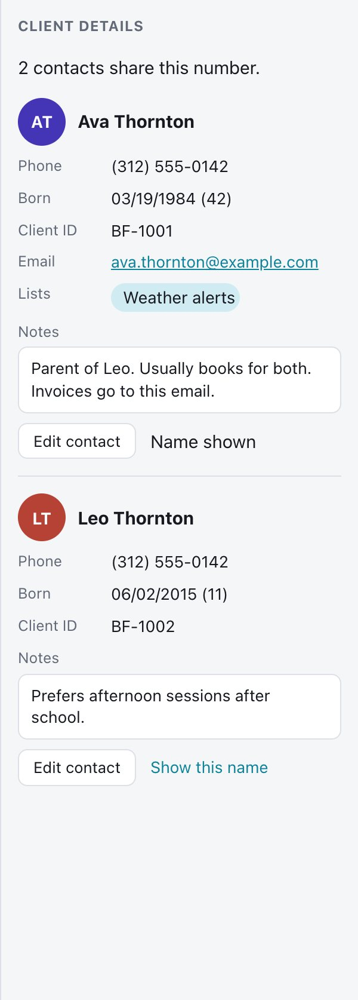
The panel button in the conversation header (a rectangle with a bar on the right) hides or shows it, and TextBoss remembers your choice. The panel steps aside by itself when there isn't room, such as on a laptop or with several conversations open.
8Shared phone numbers
Several contacts can share one phone number, like a parent who books for their children. The conversation shows one contact's name followed by "+1" (or +2, +3…).
- Hover over the name in the list, or look under the name in the conversation header, to see everyone at that number.
- The person button in the header lists each contact so you can open the right one.
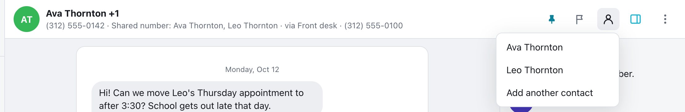
Choosing whose name is shown
By default the contact added first is shown. To pick another, open their contact page and click Show this name for the number, or click Show this name on their card in the client details panel. That contact is also used for merge fields like {first_name} and for notification names.
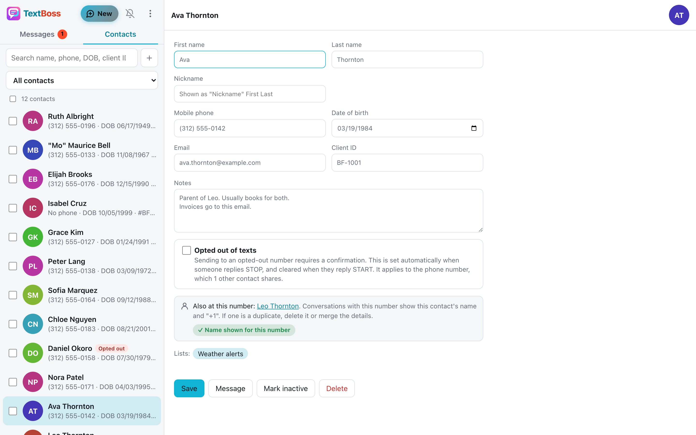
9Side-by-side conversations
On a computer you can have up to three conversations open at once. Cmd-click (Mac) or Ctrl-click (Windows) a conversation, or use the Open beside button that appears when you hover a row. Each one has its own message box and close button.
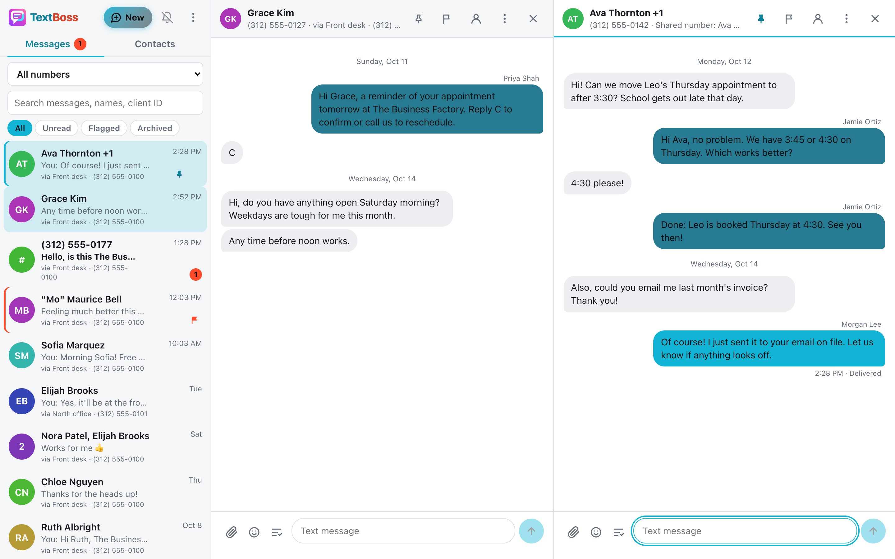
10Contacts
The Contacts tab lists your clients. Search by name, phone, date of birth or client ID, and filter by list, opted out, or no phone number. Click a contact to see and edit their details.
- Details
- First and last name, nickname, mobile phone, date of birth, email, client ID and notes. A nickname shows in quotes, like "Mo" Maurice Bell.
- Opt-out
- Applies to the phone number. It's set automatically when someone replies STOP (or UNSUBSCRIBE and similar) and cleared when they reply START. You can also set it by hand.
- Inactive
- Clients who've left can be marked inactive: they're hidden from Contacts, searches and bulk messages, but keep their conversations. Any text to or from them makes them active again. Use Mark inactive on a contact page; admins can also do it from imports (see Inactive contacts).
- Message
- The Message button on a contact page opens their conversation.
Admins only: deleting contacts and blocking numbers.
11Lists and bulk messages
Bulk messages send everyone their own individual text, for example a weather closure. Replies come back into each person's own conversation.
- In Contacts, tick the people to include, or filter to a list and use the tick box at the top to select everyone.
- Click Message in the bar that appears. Add to list saves the selection as a named list for next time.
- Pick the number to send from, write the message (merge fields like
{first_name}work), and send.
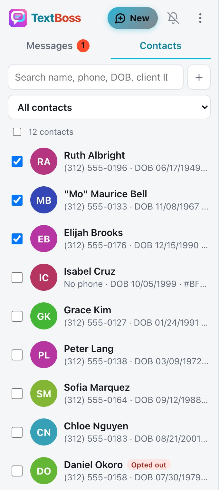
Texts go out one per second in the background, so you can leave the page. Opted-out and blocked numbers are skipped automatically. The progress page shows what was sent, skipped or failed.
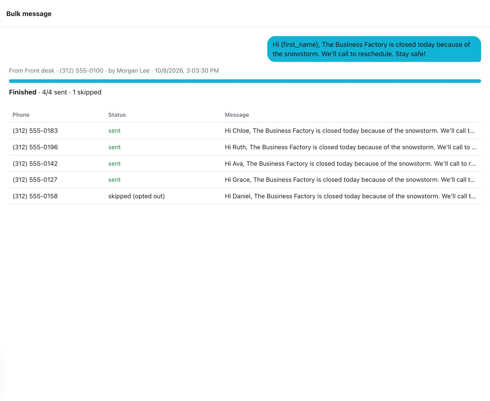
12Canned responses and auto-replies
Canned responses are saved replies anyone can insert from the message box. Manage them from ⋮ → Canned responses.
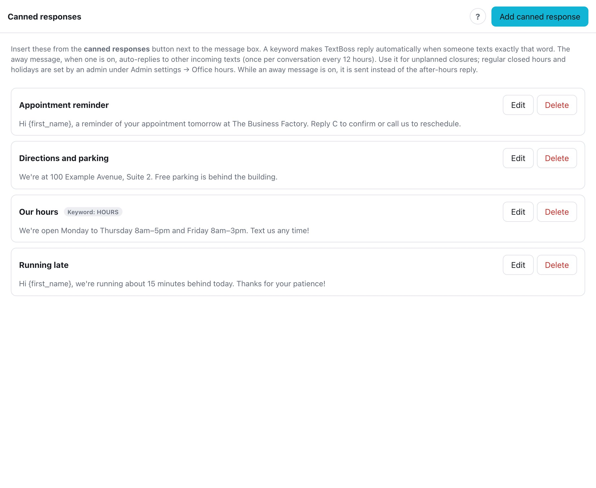
- Merge fields
{first_name},{last_name},{full_name}and{nickname}are filled in from the contact. See Merge fields.- Keyword
- Give a canned response a keyword (like HOURS) and TextBoss replies with it automatically whenever someone texts exactly that word.
- Away message
- For unexpected closures. While one is switched on, it auto-replies to incoming texts, at most once per conversation every 12 hours. Regular closed hours and holidays are handled by Office hours instead.
Auto-replies never go to group texts or to opted-out clients.
13Notifications
Get an alert and a badge on the app icon when a client texts, even when TextBoss is closed. Set it up once on each phone and computer: click the bell beside ⋮ (or ⋮ → Notifications) and allow notifications when asked.
- Once set up, the bell pauses and resumes alerts on that device with one click. Paused is shown as a bell with a slash.
- Show message text can be turned off so alerts just say "New message", keeping client details off a locked screen.
- Send a test checks that alerts reach that device.
- On iPhone and iPad, notifications need iOS 16.4 or later and TextBoss installed on the Home Screen.
14Appearance
⋮ → Appearance changes how TextBoss looks for you. Your choices are saved to your account, so they follow you to other devices, and don't affect anyone else.
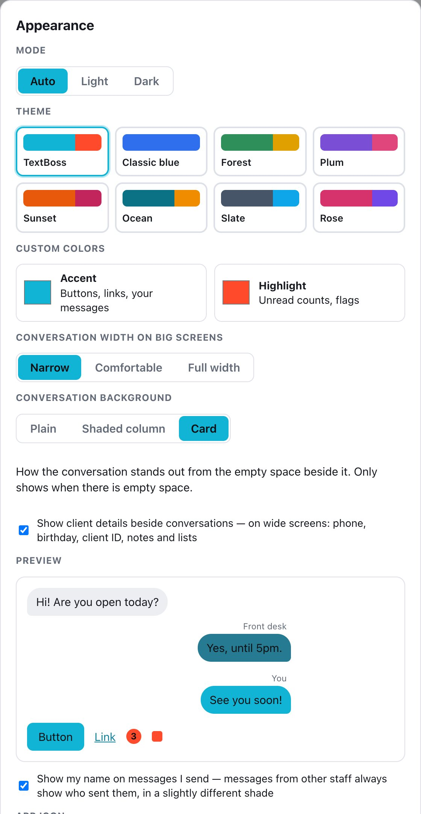
- Mode and theme
- Light, Dark or Auto (follows your device), a color preset, or your own accent and highlight colors.
- Conversation width
- On big screens, messages stay in a readable column: Narrow (the default), Comfortable or Full width.
- Conversation background
- How that column stands out from the empty space beside it: Card (the default), Shaded column or Plain.
- Client details
- Show or hide the client details panel.
- Show my name on messages I send
- On by default. Teammates' messages always show their name.
- App icon
- Pick or design your own icon. To see it on your home screen or Dock, remove and re-add the installed app.
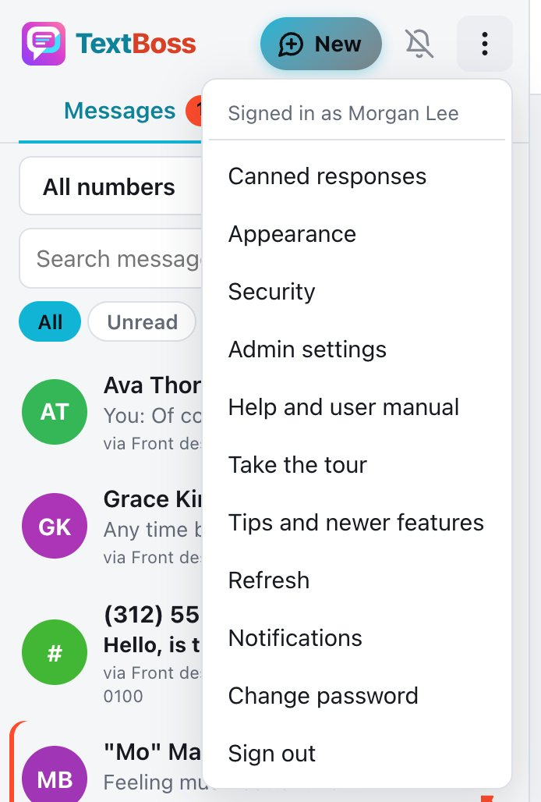
15Security and signing in
⋮ → Security is where you protect your account. Client messages are private, so please set up two-factor sign-in.
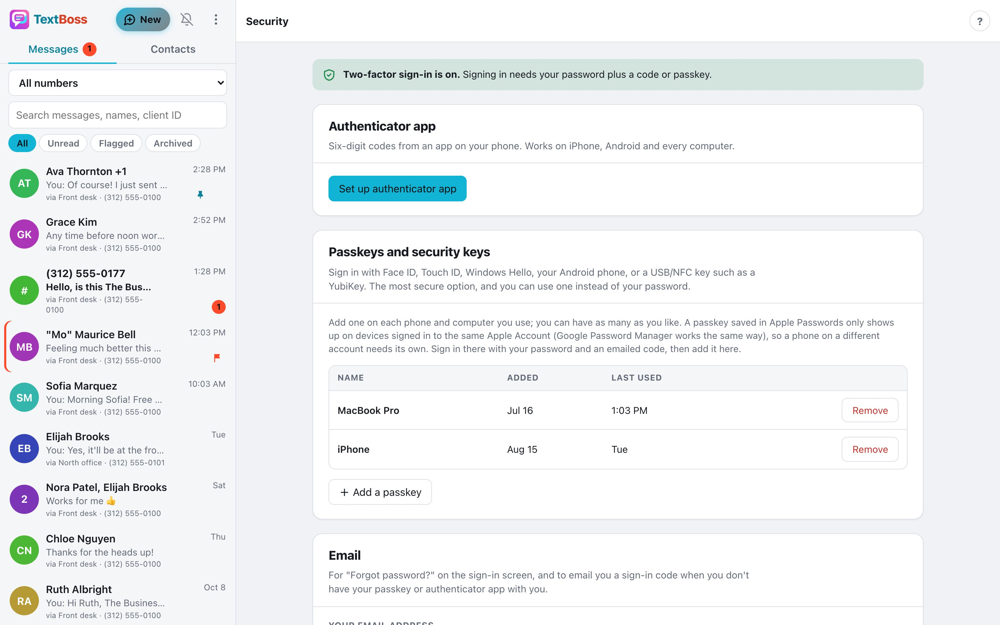
- Passkeys and security keys
- Sign in with Face ID, Touch ID, Windows Hello, your Android phone's screen lock, or a USB/NFC key like a YubiKey. You can also use a passkey instead of your password. Add one on each phone and computer you use: a passkey saved in Apple Passwords only appears on devices signed in to the same Apple Account (Google Password Manager works the same way).
- Authenticator app
- Six-digit codes from an app like Google Authenticator, Microsoft Authenticator, 1Password or Authy. Scan the QR code and enter the first code.
- Your address for Forgot password? and for emailed sign-in codes when you don't have your passkey or authenticator app with you.
- Signed-in devices
- Sign out everywhere else signs out every other browser and device, for example a shared computer you forgot to sign out of.
Passwords
Passwords must be at least 10 characters, not a common or easily guessed password, not a simple pattern like 1234567890, and not contain your username, name or email. A few unrelated words (like otter lamp ninety) are strong and easy to remember. Change yours from ⋮ → Change password.
After too many wrong passwords or codes, sign-in for that username pauses for 15 minutes.
16On your phone
On a phone, the conversation list and a conversation each take the whole screen. Tap a conversation to open it and the arrow to go back. Everything else works the same.
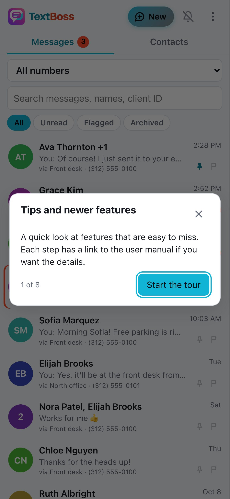
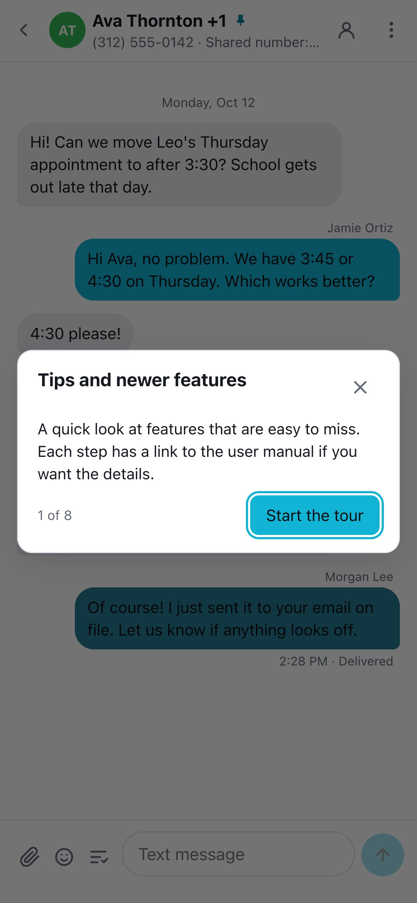
Running TextBoss
For admins. Everything here lives under ⋮ → Admin settings.
17Texting provider
TextBoss sends and receives through your BulkVS or VoIP.ms account. Choose the provider, enter its API credentials and save; TextBoss tests the connection straight away.
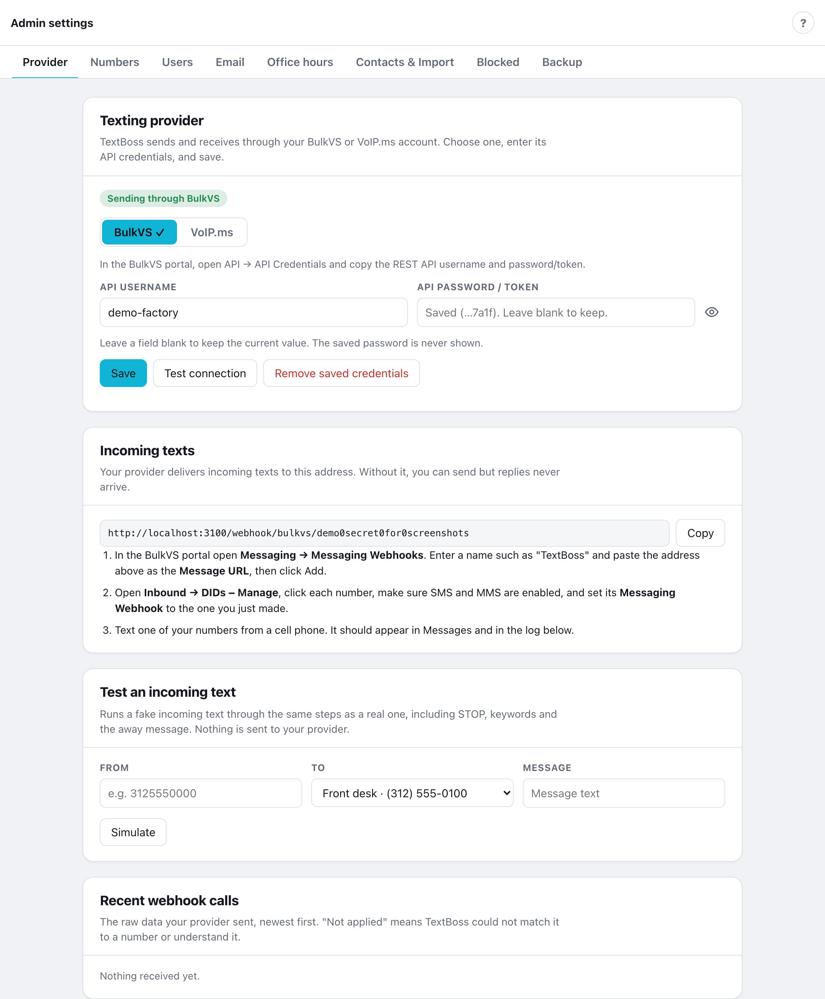
- BulkVS: the REST API username and password/token from API → API Credentials in the BulkVS portal. Turn on delivery receipts on the BulkVS messaging webhook to get Delivered/Failed statuses.
- VoIP.ms: your VoIP.ms login email and the separate API password. Turn the API on and allow your server's IP address under Main Menu → SOAP and REST/JSON API. VoIP.ms can't send group texts or report delivery.
- Incoming texts: copy the address shown under Incoming texts into your provider's portal, following the steps on that card. Without it you can send but replies never arrive.
- Test an incoming text runs a fake text through TextBoss to check everything, without contacting your provider. Recent webhook calls shows exactly what your provider sent.
18Numbers
Add each phone number from your provider and give it a label like "Front desk". Untick Active to hide a number you don't use. With only one active number, the number selector disappears for everyone.
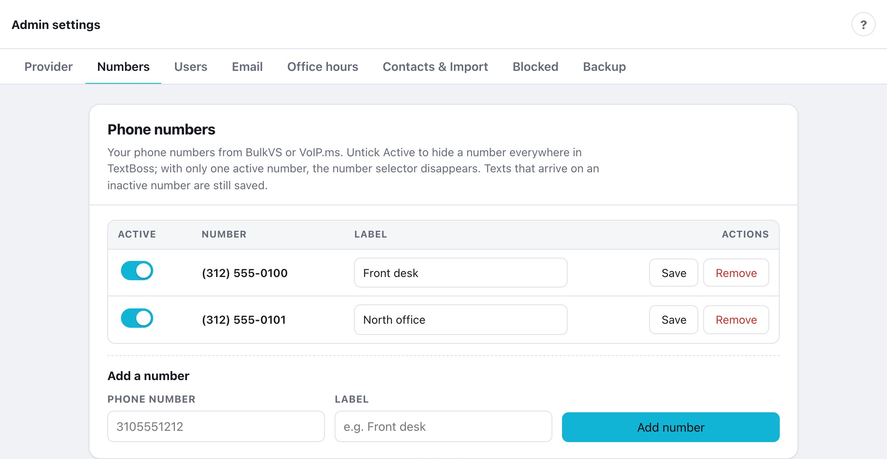
19Users and sign-in security
Add staff, choose which numbers each person can use (admins see every number), and see who has two-factor sign-in.
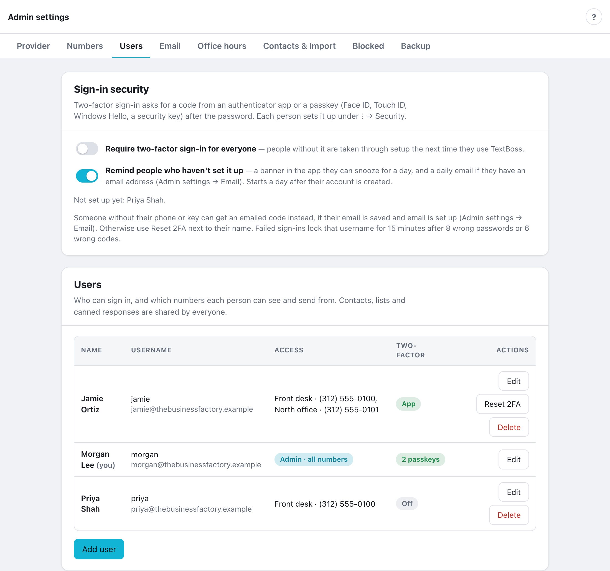
- New users need an email address, used for password resets and sign-in codes, and a password that meets the password rules.
- Require two-factor sign-in for everyone: people without it are walked through setup the next time they use TextBoss. Set up your own first.
- Remind people who haven't set it up: a banner in the app and a daily email, starting a day after their account is created.
- Reset 2FA removes someone's passkeys and authenticator app if they've lost their phone and have no email to get a code.
- Only admins can delete conversations or contacts, and block senders.
20Email
Enter your organization's email (SMTP) settings so TextBoss can send password resets, sign-in codes and two-factor reminders. One-click presets fill in Google Workspace, Microsoft 365 and iCloud. Those need an app password, not the normal one. Use Send a test to check.
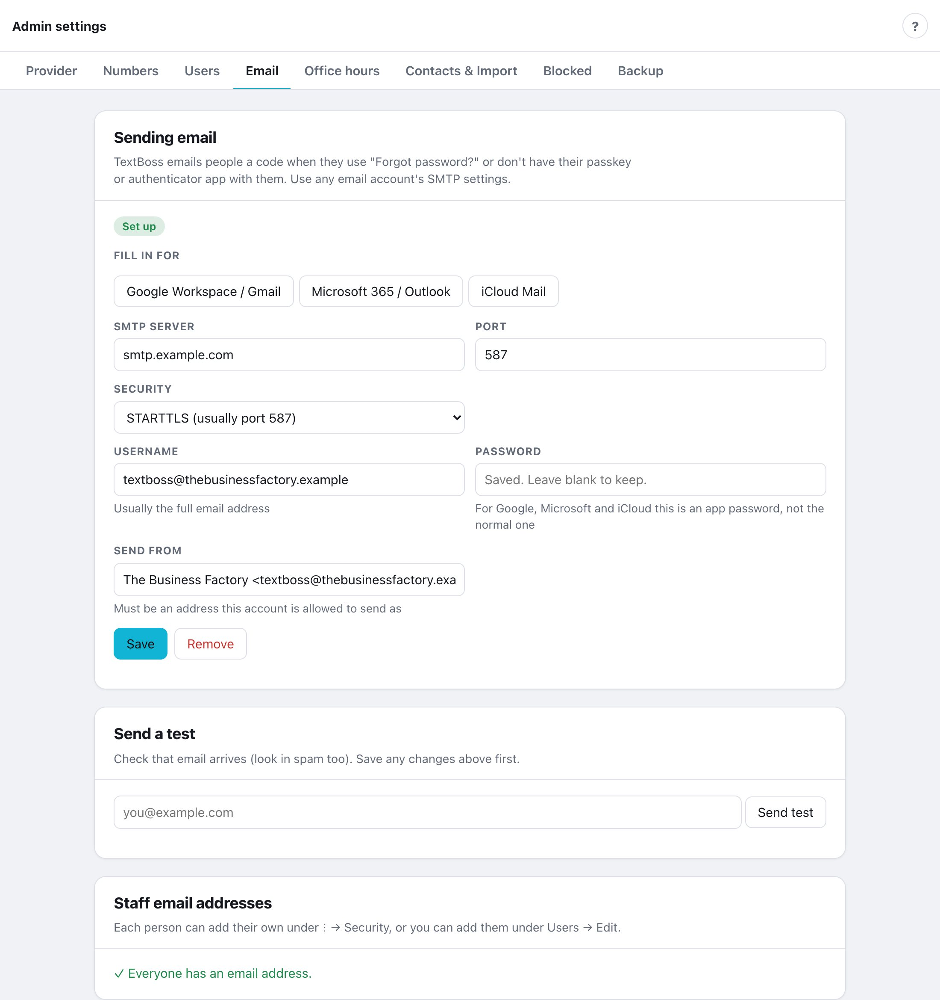
21Office hours
Set your weekly hours and holidays, and TextBoss replies automatically when a client texts while you're closed: once per conversation per closed stretch, so a client who texts all weekend gets one reply.
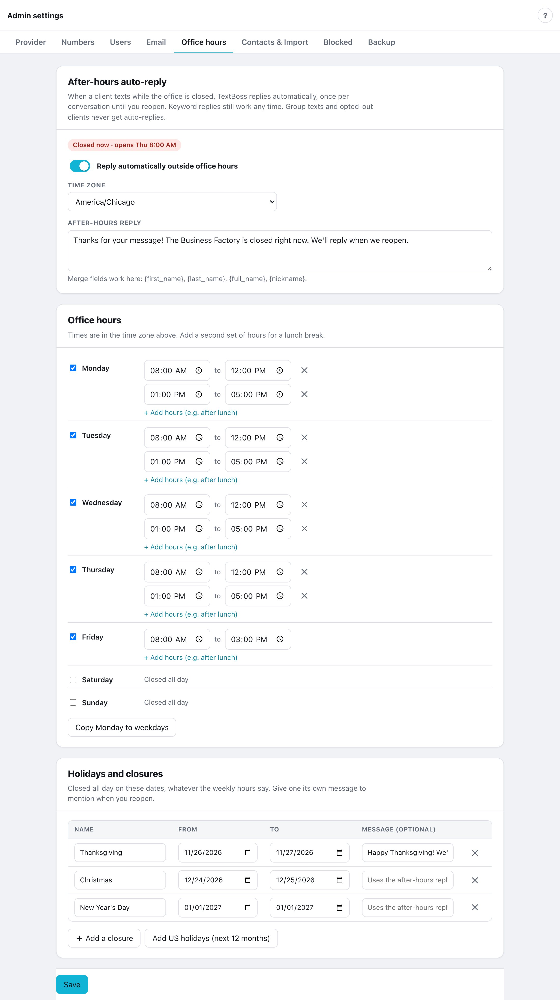
- Add a second set of hours for a lunch break. Copy Monday to weekdays saves typing.
- Add US holidays fills in the next 12 months; remove any you stay open for. A closure can have its own message, like "Closed for Thanksgiving, back Monday".
- Keyword replies still work at any hour. A switched-on away message takes priority over the schedule.
22Contacts and imports
Keep TextBoss's contacts in step with your client software by importing its client list, as often as you like. Clients are matched by client ID, so re-importing the full list updates changed details (like a new phone number) instead of making duplicates. Imports never delete contacts or clear notes.
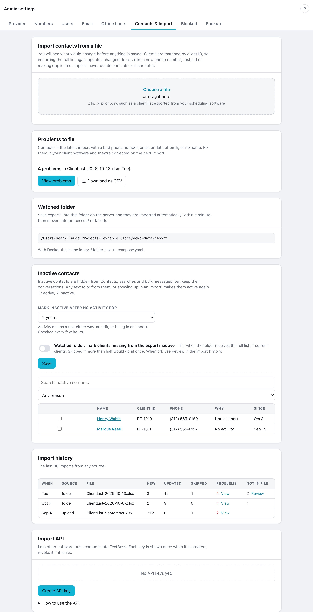
- Upload a file
- Drop an .xls, .xlsx or .csv export. You see exactly what would change before anything is saved.
- Watched folder
- Exports saved into the import folder on the server are imported automatically within a minute.
- Import API
- Other software can push contacts with an API key.
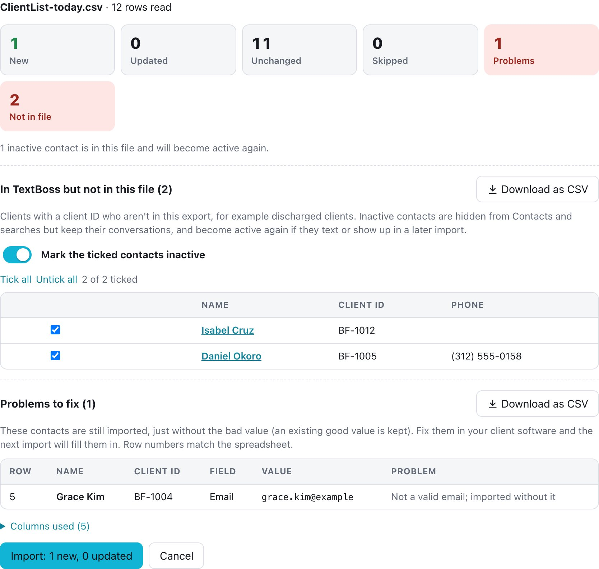
Problems to fix
A row with a bad phone number, email or date of birth is still imported, just without the bad value, and is listed under Problems to fix with its spreadsheet row. The list is saved with every import: Problems to fix shows the latest one, and View in the import history opens any earlier one, each with a CSV download. Fix them in your client software and the next import fills them in.
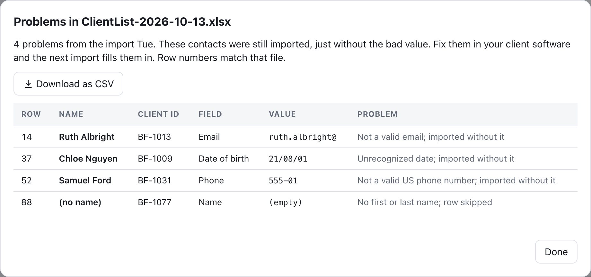
23Inactive contacts
Inactive contacts are clients who've left. They're hidden from Contacts, searches and bulk messages but keep their conversations, and any text to or from them, or appearing in a later import, makes them active again.
- From an import: when a file is your full client list, the preview lists clients who aren't in it, with tick boxes to mark them inactive. For watched-folder imports, use Review in the import history, or switch on automatic marking (skipped if more than half would go at once, which looks like a partial export).
- After a quiet period: Mark inactive after no activity for 6 months to 3 years, or a custom number of days.
- Browse and reactivate them in the Inactive contacts card on the Contacts & Import tab.
24Blocked numbers
Texts from blocked numbers are dropped without notifying anyone. Unblock them here.
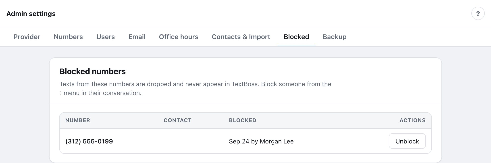
25Backup and restore
Download backup gives you one file with everything: messages, contacts, users, settings and attachments. Store it privately; it contains client information. Restore from a backup replaces everything on this server with a backup, which is also how you move TextBoss to a new server.
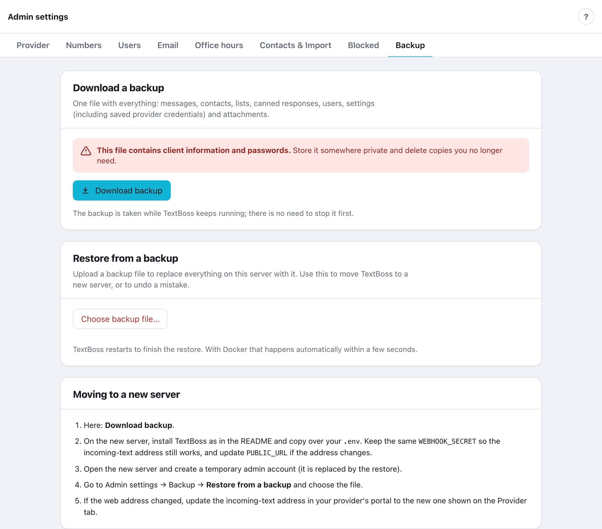
Reference
26Merge fields
Merge fields are filled in from the contact when a canned response, auto-reply or bulk message is sent. For a shared number, the contact whose name is shown is used.
| Field | Becomes | For "Mo" Maurice Bell |
|---|---|---|
{first_name} | First name | Maurice |
{last_name} | Last name | Bell |
{full_name} | First and last name | Maurice Bell |
{nickname} | Nickname, or the first name if there isn't one | Mo |
27Troubleshooting
- A reply someone else sent isn't showing
- Use ⋮ → Refresh. TextBoss reconnects by itself when your phone wakes up, but this forces it.
- I'm not getting notifications
- Check the bell isn't paused. On iPhone, TextBoss must be installed on the Home Screen. Use Send a test in ⋮ → Notifications; if the device blocked notifications, it shows how to allow them.
- My message says Failed
- The reason is shown under the message. Common causes: the number can't receive texts, or the client opted out with their carrier.
- I can't sign in
- Use Forgot password?. After too many attempts, wait 15 minutes. If you have no email set up, ask an admin to reset your password or two-factor sign-in.
- My passkey isn't offered on my phone
- Passkeys belong to one Apple or Google account. Sign in with your password and choose Email me a code instead, then add a passkey for that phone under Security.
- A name shows "+1"
- Several contacts share that number. See Shared phone numbers.